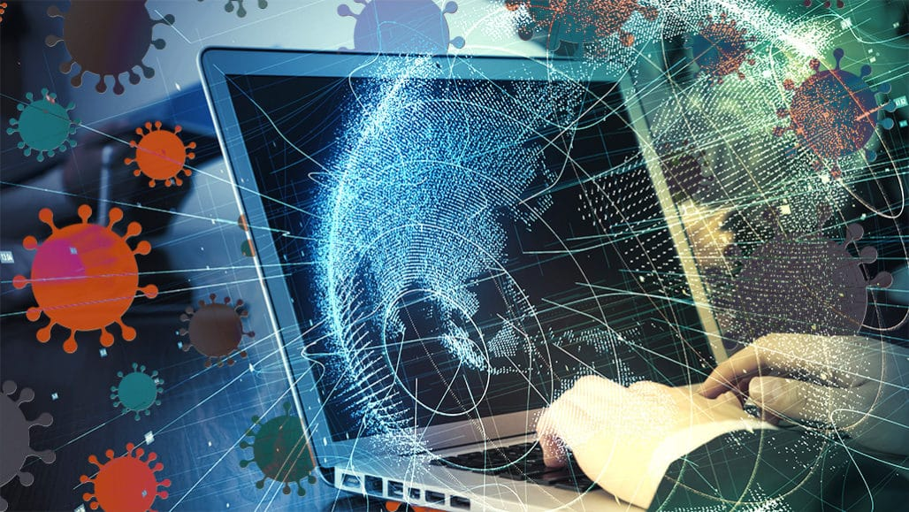

How can computer science contribute to stop the COVID-19 pandemic?
8th Feb, 2021 Dariusz Prokopowicz Cardinal Stefan Wyszynski University in Warsaw ICT information technologies proved to be very helpful in improving big data collection processes and analytics in various fields of social sciences, medical, economic, etc. ICT, Internet and Industry 4.0 information technologies helped to reduce the negative impact of the SARS-CoV-2 coronavirus pandemic ( Covid-19) on societies, economy, health care institutions, etc. These technologies have made it possible to increase the scale of digitization and Internetisation of remote communication processes as well as social, economic and other processes. Thanks to the implementation of ICT, Internet and Industry 4.0 information technologies to remote communication processes, economic processes and the improvement of analytical processes implemented in various scientific disciplines, many institutions and economic entities have managed to significantly reduce the negative effects of the Coronavirus pandemic. Thanks to the aforementioned technologies, the scale of the health, economic, social, etc. crisis caused by the SARS-CoV-2 (Covid-19) coronavirus pandemic is much smaller than it would be if these technologies did not exist. Therefore, the current fourth technological revolution has proved to be very helpful in reducing the negative impact of the SARS-CoV-2 (Covid-19) coronavirus pandemic on the functioning of people, the operation of public institutions, economic entities and entire economies. If this type of pandemic appeared, for example, in the middle of the 20th century, i.e. before the development of computer science and the third technological revolution, then the negative impact of the SARS-CoV-2 (Covid-19) coronavirus pandemic on people and entire economies would be several times higher than that recorded in 2020.
Mela G. Abdul-Haleem University of Baghdad The use of pattern recognition techniques can be helpful for localization the existing of the cells of the virus in the body for example Russia uses facial recognition to tackle Covid-19. City officials are using a giant network of tens of thousands of cameras - installed with facial recognition software. An interesting New York Times article last week posited that governments’ use of digital surveillance techniques for the COVID-19 response – such as the tracking of geolocation to gauge quarantine restrictions – would lead to more pervasive digital tracking in the future. On a related note, there have been reports of an increased use of facial recognition technologies as governments use digital tools to respond to the outbreak 